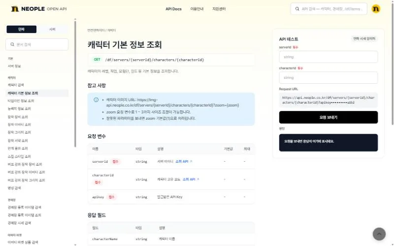
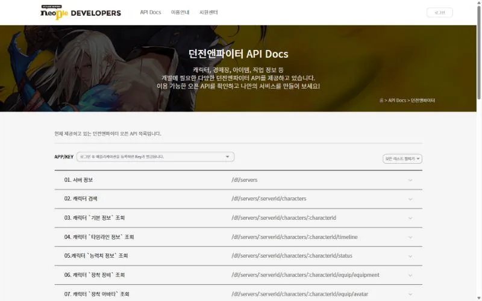
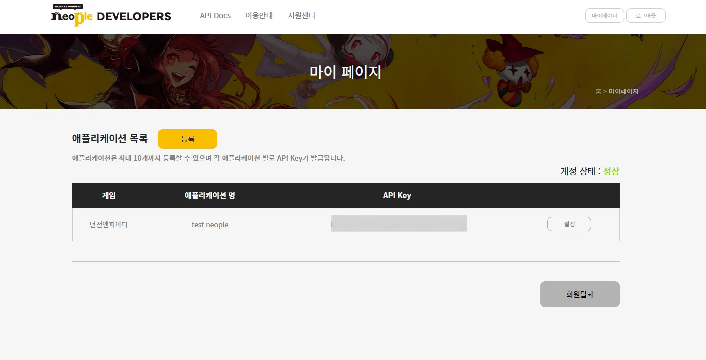
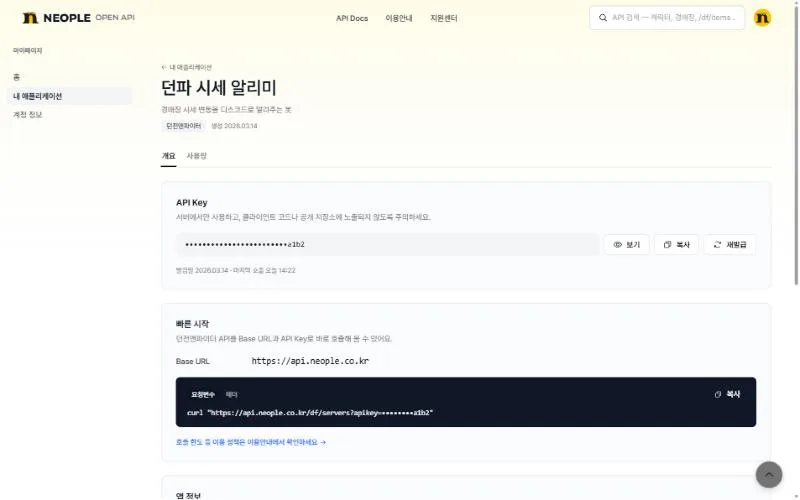

Neople Developers
Neople Developers는 던전앤파이터 · 사이퍼즈 오픈 API를 제공하는 개발자 포털입니다. 사용자 화면과 관리자 화면을 리뉴얼하고 있습니다.
Figma로 메인 화면의 톤을 먼저 잡고, 디자인 시스템과 개선 프롬프트를 Claude Code에 연결해 화면을 구현했습니다. 지금은 코드 환경에서 UI 디테일을 다듬고 있습니다.

01 — Overview
디자인 시스템으로 시작해
AI와 함께 코드까지 완성한 UI
Neople Developers의 사용자 · 관리자 화면 설계 및 구현. 메인 화면을 Figma로 먼저 작업해 톤과 무드를 잡고, 이를 기준으로 라이브 서비스의 개선 사항을 프롬프트로 정리했습니다.
기존 디자인 시스템과 함께 Claude Code에 적용해 화면을 생성하고, 코드 환경에서 레이아웃 · 컴포넌트 · 디테일을 직접 개선했습니다.
Scope
사용자 화면 · 관리자 화면
디자인 시스템 적용 · AI 화면 생성 · UI 리파인
Tools
Claude Code · Figma
디자인 시스템 연동 · 코드 리파인 · Figma 연계
02 — Design Process
메인 화면 시안에서 Figma까지
여섯 단계 작업 흐름
01Key Screen
메인 화면을 Figma로 먼저 작업해 전체 톤과 무드를 기준으로 설정
02Design System
기존 디자인 시스템과 컴포넌트 규칙을 구현 기준으로 사용
03Improvement Prompt
시안을 기준으로 라이브 서비스의 개선 포인트를 정리해 AI에게 구현 프롬프트 작성을 요청
04Claude Code
정리한 프롬프트와 디자인 시스템을 참조해 사용자 · 관리자 화면 생성
05UI Refinement
코드 환경에서 레이아웃 · 컴포넌트 · 디테일 직접 수정
06Figma Sync
유지보수를 고려해 구현된 화면을 Figma 디자인 파일로 재구성 예정
03 — Screen Design · API Docs
흩어진 아코디언 목록을
탐색 · 문서 · 테스트 한 화면으로
AS-IS

- 36개 API가 한 페이지에 나열되어 스크롤로만 탐색
- 문서와 테스트가 분리되어 별도 도구 필요
TO-BE
디자인 시스템 기반으로 Claude Code가 생성하고 코드에서 다듬은 화면 · 데이터는 블러 처리
API 트리 · 검색
좌측 트리와 검색으로 원하는 API에 바로 이동
엔드포인트 중심 문서
메서드 · URL을 상단에, 변수와 응답은 표로 정리
옆에서 바로 테스트
문서를 보며 값 입력 후 즉시 요청 · 응답 확인
04 — Screen Design · My Application
키만 보이던 표를
앱 상태가 보이는 카드로
AS-IS

- 앱이 표 한 줄로만 표시되고 관리는 설정 버튼 하나
- API Key가 목록에 그대로 노출
TO-BE

디자인 시스템 기반으로 Claude Code가 생성하고 코드에서 다듬은 화면 · 데이터는 블러 처리
카드형 앱 목록
게임 · 호출 수 · 생성일을 카드 하나로 비교
남은 생성 수 안내
빈 카드로 남은 개수 표시, 바로 생성으로 연결
키는 상세에서
목록에서는 숨기고 상세에서 보기 · 복사 · 재발급
Work in progress
Still in progress:
지금도 다듬고 있는 다음 단계의 화면들.
Done
04/ 06 steps
Key Screen · Design System · Improvement Prompt · Claude Code — 메인 시안부터 화면 생성까지 완료했습니다.
In progress
UI Refinement
코드 환경에서 레이아웃 · 컴포넌트 · 디테일을 직접 다듬고 있습니다.
Next
Figma Sync
유지보수를 고려해 구현된 화면을 Figma 디자인 파일로 재구성할 예정입니다.
Key Takeaway
디자인 시스템을
구현 환경까지 확장하다
디자인 시스템을 AI 개발 환경에 연결하고, 생성된 결과물을 코드에서 직접 개선하며 디자인과 구현 사이의 간격을 줄인 작업입니다.